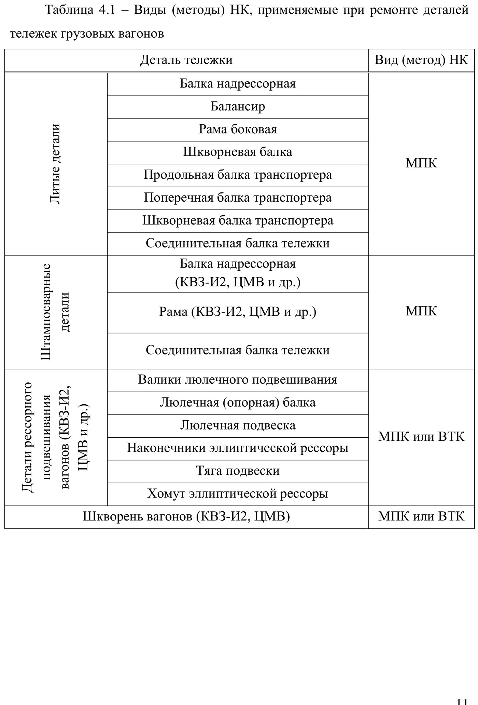
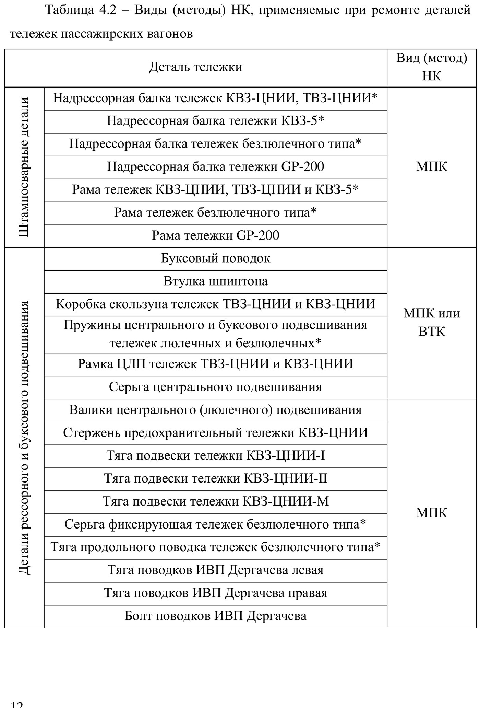
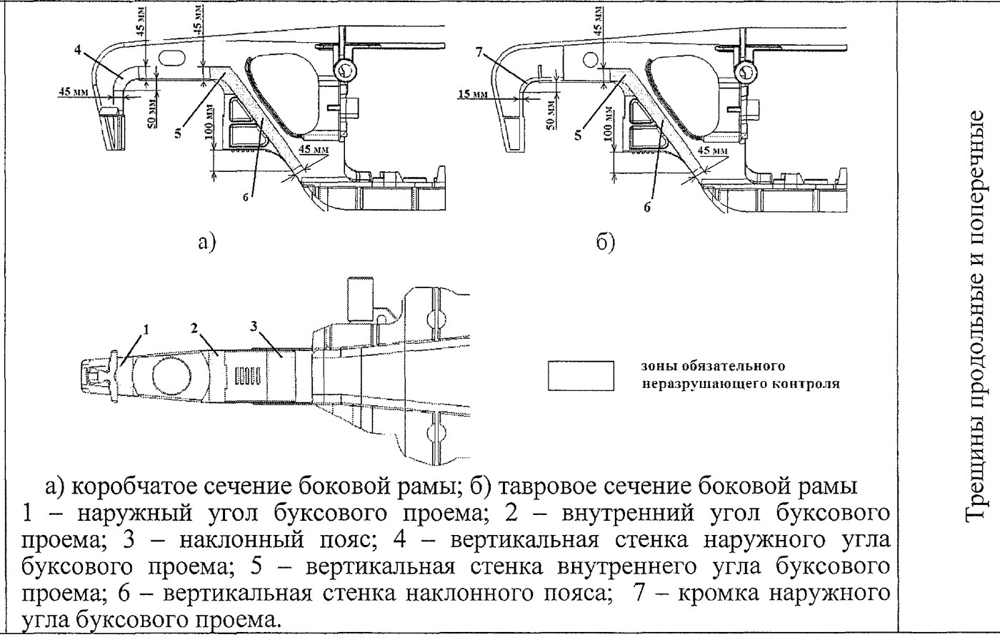
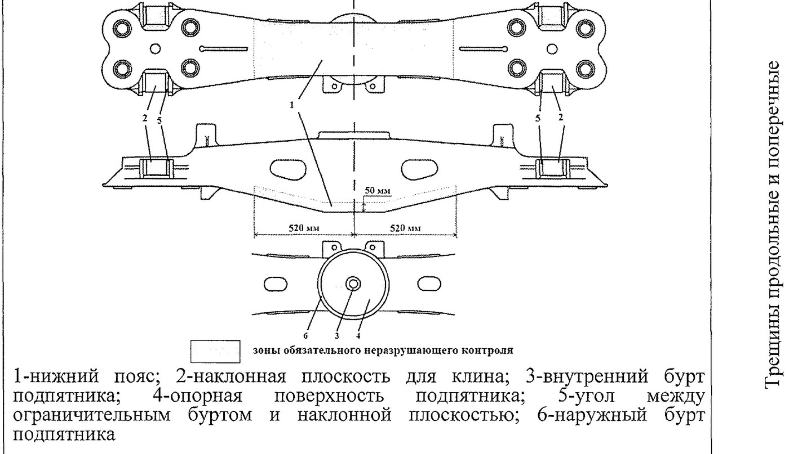
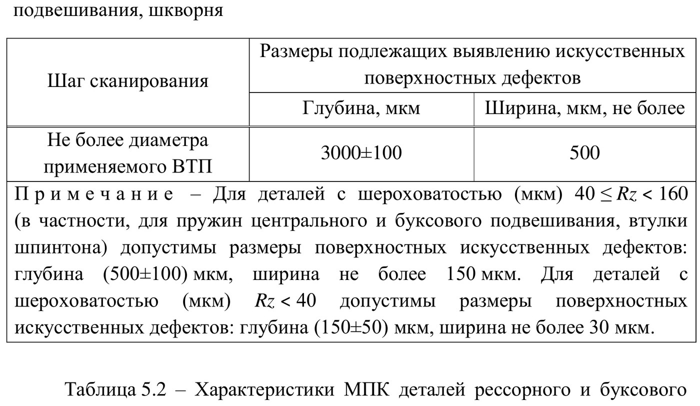
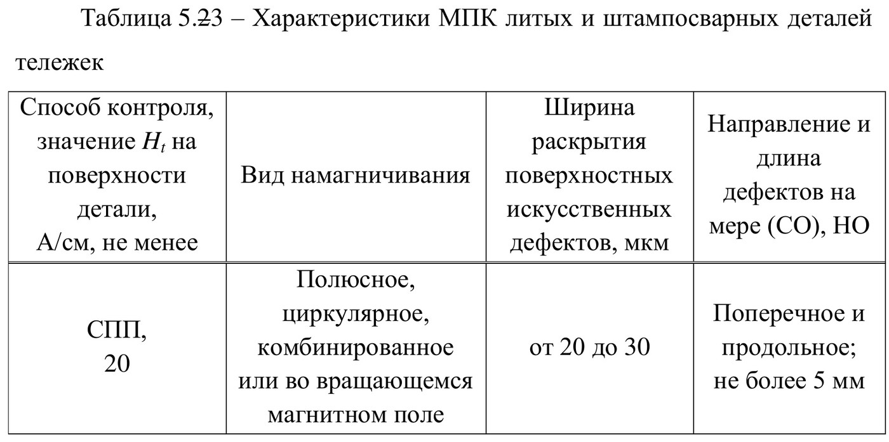

Buzmasdan nazorat (НК) — asoslar va zonalar
НК nima uchun kerak, ikkita usul (МПК va ВТК), qaysi detal qaysi usulda, nazorat zonalari, sezgirlik parametrlari va ish joyiga qo'yiladigan talablar.
НК nima va nima uchun kerak
Buzmasdan nazorat (неразрушающий контроль, НК) — detalni buzmasdan, uning ichida yoki yuzasida ko'z bilan ko'rinmaydigan yoriqlarni topish usuli. Bu vagon ta'mirlash texnologiyasining bir qismi bo'lib, temir yo'l transportining texnik va ekologik xavfsizligini ta'minlashga xizmat qiladi (ПР НК В.3, band 4.1.1).
Ikkita usul
| МПК — magnitoxukukli | ВТК — uyurma tokli | |
|---|---|---|
| Qisqacha | Магнитопорошковый контроль | Вихретоковый контроль |
| Nimaga asoslangan | Nuqson ustida hosil bo'ladigan tarqoq magnit maydonini magnit kukuni bilan ko'rsatish | Detalda uyurma toklarni uyg'otib, nuqson tufayli o'zgargan maydonni datchik bilan qayd etish |
| Natija qanday ko'rinadi | Yuzada magnit kukuni to'plangan «indikator rasmi» | Asbob tovush va yorug'lik signali beradi |
| Qaysi detallarga | Barcha quyma va shtamp-payvand detallar — majburiy | Ressor va buksa osmasi detallari uchun МПК ga muqobil |
| Arbitraj (yakuniy) usul | МПК — kelishmovchilik bo'lganda shu usul hal qiladi | — |
Temir yo'l ma'muriyati qarori bilan amaliy tajriba va sinov materiallariga asoslanib qo'shimcha usullarni ham qo'llash mumkin (band 4.1.2).
Qaysi detal qaysi usulda

Bizning tip 2 aravachamiz uchun eng muhim satr — quyma detallar: nadressor balkasi, yon rama, biriktiruvchi balka. Ular uchun faqat bitta usul ko'rsatilgan — МПК.

Nazorat zonalari qayerda belgilangan
Har bir aravacha modeli uchun «majburiy» НК zonalarining joylashuvi texnologik yo'riqnomada (ТИ) konstruktorlik va ta'mir hujjatlari asosida ko'rsatilishi shart (band 4.1.6).
Tip 2 yuk aravachamiz uchun zonalar РД 32 ЦВ 052-2009 ning 7.2-jadvalida berilgan:


Yo'lovchi vagonlari va GP-200 aravachasi detallarining zonalari ПР НК В.3 ning 5.1–5.31-rasmlarida berilgan — ularning barchasi saytning «Defektoskop zonalari» bo'limiga kiritilgan.
Sezgirlik parametrlari

- Skanerlash qadami qo'llanilayotgan ВТП diametridan katta bo'lmasligi kerak.
- Aniqlanishi kerak bo'lgan sun'iy nuqson: chuqurligi 3000 ± 100 mkm, kengligi 500 mkm dan ko'p emas.
- G'adir-budurligi 40 ≤ Rz < 160 mkm bo'lgan detallar (prujinalar, shpinton vtulkasi): chuqurlik 500 ± 100 mkm, kenglik 150 mkm dan ko'p emas.
- Rz < 40 mkm bo'lgan detallar: chuqurlik 150 ± 50 mkm, kenglik 30 mkm dan ko'p emas.

Detalni nazoratga tayyorlash (6.1-band)
- Detal metallgacha tozalanadi: zang, ifloslik, moy, bo'yoq va nazoratga xalaqit beruvchi boshqa qoplamalar olib tashlanadi.
- Vizual ko'zdan kechiriladi (kerak bo'lsa lupa bilan) — ko'z bilan ko'rinadigan nuqsonlarni aniqlash uchun.
- Vizual ko'rikda ruxsat etilmaydigan nuqson topilgan detal НК ga umuman qo'yilmaydi — u to'g'ridan-to'g'ri brak qilinadi.
Asboblarni tayyorlash (6.2-band)
НК vositalarini tayyorlash har ish smenasi boshida, o'zgartkich yoki kabel almashtirilganda, defektoskopik materiallar almashtirilganda, shuningdek defektoskopist qarori bilan bajariladi.
- tashqi ko'rik va ulanishning to'g'riligini tekshirish;
- elektron protokol uchun ma'lumot kiritish;
- asosiy nazorat parametrlarini tekshirish va sozlash;
- ish qobiliyatini tekshirish natijasini jurnalga (protokolga) yozib qo'yish.
МПК uchun qo'shimcha: magnit indikatorini tayyorlash va sifatini tekshirish, detal yuzasidagi Ht qiymatini tekshirish, defektoskop (НУ) ning ish qobiliyatini tekshirish.
Ish joyiga qo'yiladigan talablar (4.3-band)
| Talab | Qiymat |
|---|---|
| Umumiy va mahalliy yoritilganlik (birgalikda) | 500 lk dan kam emas |
| Faqat umumiy yoritilganlik | 200 lk dan kam emas |
| МПК da ko'zdan kechirishdagi yoritilganlik (UB nursiz) | 1000 lk dan kam emas |
| UB nurlanish ishlatilganda — ko'rinadigan yorug'lik | 20 lk dan ko'p emas |
| UB nurlanish quvvati detal yuzasida | 20 Вт/м² dan kam emas |
| UB nurlanish spektri | 315…400 nm, maksimum 365 ± 5 nm |
| Ko'k yorug'lik ishlatilganda — xonadagi yoritilganlik | 300 lk dan ko'p emas |
| Elektr ta'minoti | 220 ± 22 В, 50 ± 0,5 Гц; ko'chma chiroqlar uchun 42 В dan ko'p emas |
| Havo va obyekt harorati | +5 dan +40 °C gacha |
Ish joyida bo'lishi shart bo'lgan narsalar (4.3.6-band): ko'targich mexanizmlari; yirik detallarni qotirish va aylantirish uchun stend-kantovatellar; stellajlar va aniq ajratilgan maydonchalar (yaroqli / ta'mirga / brak); metall shkaflar; НК texnologik kartalari; jurnallar; ko'chma chiroq; metall va tukli cho'tkalar; artish materiali; kamida 4 karra kattalashtiruvchi lupa; bo'linma qiymati 1 mm bo'lgan kamida 300 mm li metall chizg'ich; bo'r, marker yoki bo'yoq; ГОСТ 2310 bo'yicha slesar bolg'asi.
Nazorat savollari
Avval o'zingiz javob bering, so'ngra tekshiring.
1. Tip 2 aravachaning yon ramasi va nadressor balkasi qaysi usul bilan tekshiriladi?
2. МПК da detal yuzasidagi Ht qanday bo'lishi kerak?
3. Detalni НК ga tayyorlashda nima qilinadi?
4. Nadressor balkasining pastki poyasidagi majburiy nazorat zonasi qanday chegaralarda?
5. Lyuminessent indikator ishlatilganda ish joyida qanday shartlar bo'lishi kerak?
Manbalar: ПР НК В.3 «Правила неразрушающего контроля деталей тележек вагонов при ремонте. Специальные требования» (2019-yil tahriri, № 2-o'zgartish bilan) va РД 32 ЦВ 052-2009, 7-bo'lim.
Andijon vagon deposi · telejka ta'mirlash sexi.